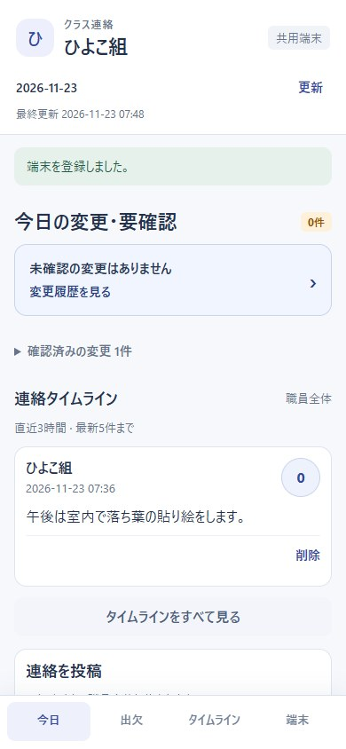
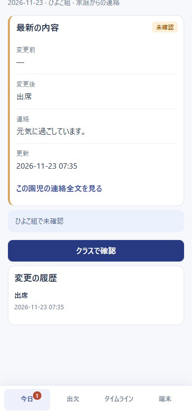
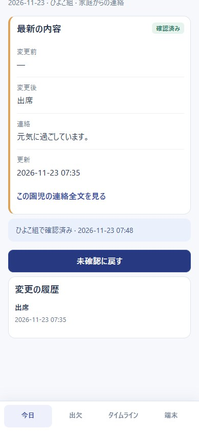
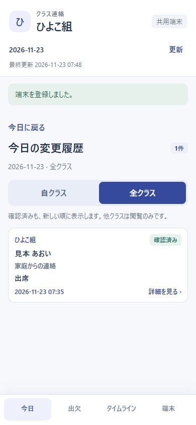
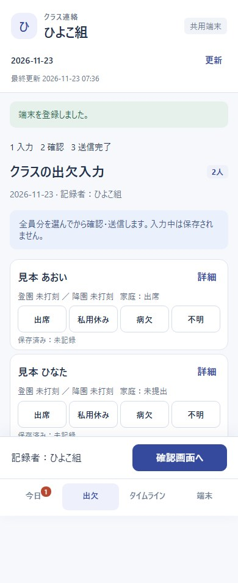
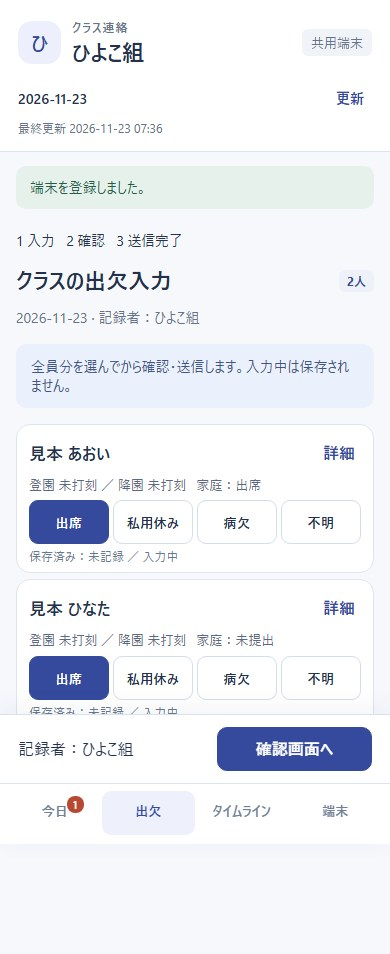
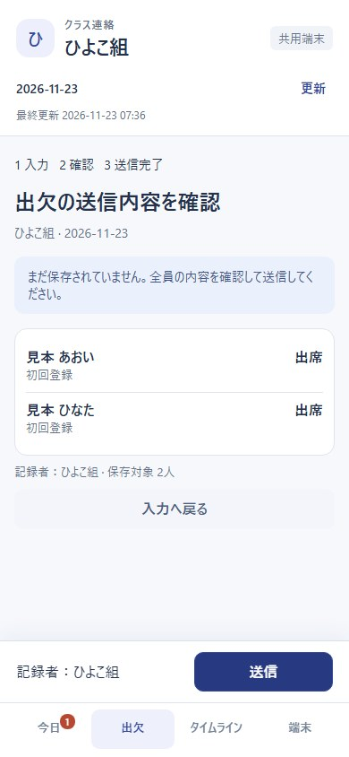
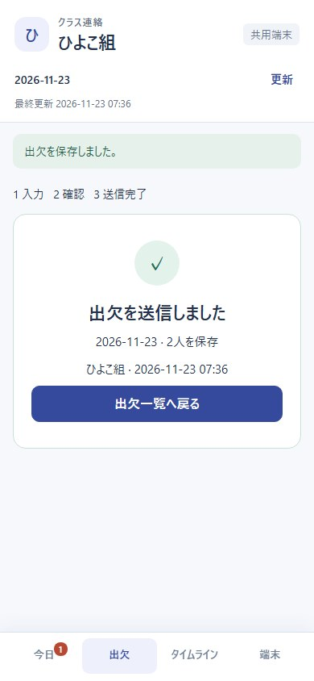
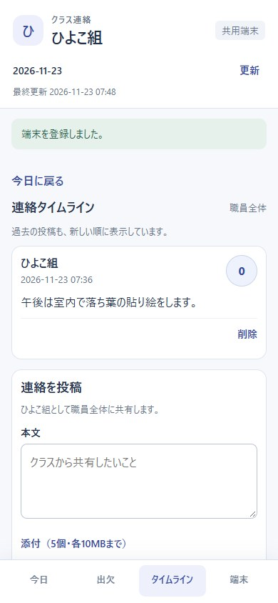
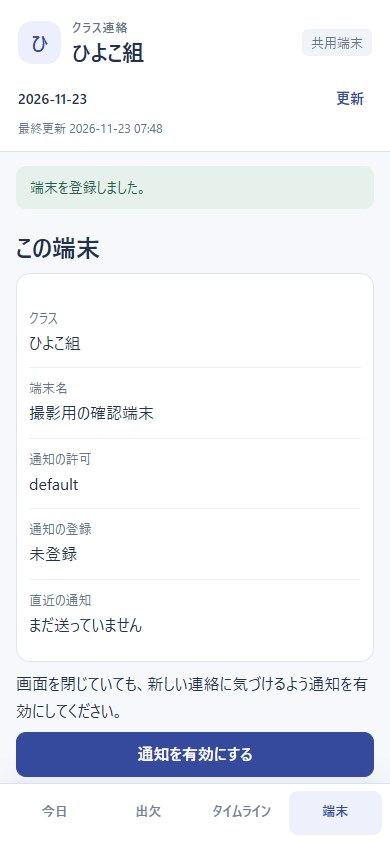

クラス用スマホで連絡を見る、出欠を送る
園で登録したクラス共用スマホを使います。上部のクラス名と日付を最初に確認します。出欠・確認・投稿の記録者はクラス名です。
2026年11月23日に追加した手順です。画面は架空の職員・園児のデータで撮影しています。画像を押すと拡大できます。
1今日の連絡と変更を確認する
「今日」を開き、「今日の変更・要確認」や保護者からの連絡を読みます。園児の名前から、当日の詳しい連絡を開けます。
変更の詳細を読み、現在の内容を確認してから「クラスで確認」を押します。誤って確認した場合は「未確認に戻す」で戻せます。「新しい変更が届いています」と出た場合は、最新の内容を読み直します。通知の受信だけでは確認済みになりません。
「今日の変更履歴を見る」では確認済みの変更も見られます。「全クラス」に切り替えると他クラスも閲覧できます。他クラスの確認や出欠変更はできません。




2出欠を選び、確認して送信する
「出欠」を開き、園児ごとに「出席」「病欠」「私用休み」「不明」を選びます。入力しただけでは保存されません。保護者の予定と、園で確認した出欠を照合してください。
「確認画面へ」を押し、全員の状態と変更を確かめます。直すときは入力へ戻ります。確認画面まで進んでも、まだ保存されていません。
これでよければ「送信」を押し、「送信しました」を確かめます。記録済みの出欠を訂正するときは、画面で理由が求められた園児の訂正理由も入力します。




3職員間の連絡を書き、返信する
「タイムライン」で職員間の連絡を読みます。本文を書き、必要に応じて添付して投稿します。投稿後にクラス名と本文が表示されたことを確かめます。
投稿カード右上の吹き出しの数字を押すと返信画面へ進めます。本文を入力して送信し、「タイムラインへ戻る」で戻ります。
「今日」に表示されるタイムラインは直近3時間・最大5件です。それ以前の連絡は「タイムライン」から確認します。

4通知設定と接続を確認する
「端末」で登録クラスと通知設定を確認します。通知を有効にするときはスマホの許可も確認します。管理画面の「設定済み」は通知の登録状態を示し、実際に通知が到着した証拠ではありません。
接続できないときは園が指定した接続方法と通信状態を確認します。送信結果が不明と出た場合は「送信結果を確認」で確かめます。確認せずに同じ入力を送り直さないでください。
端末の登録や解除は管理者向けの手順を参照してください。
